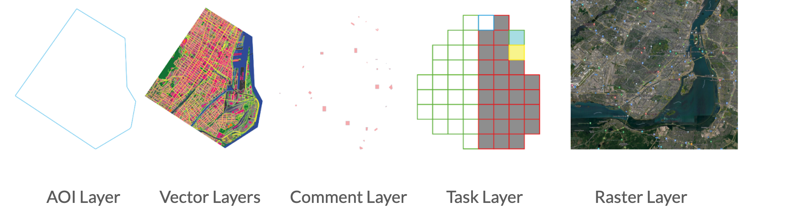
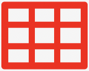
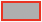
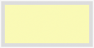
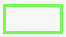
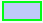
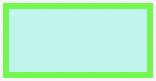
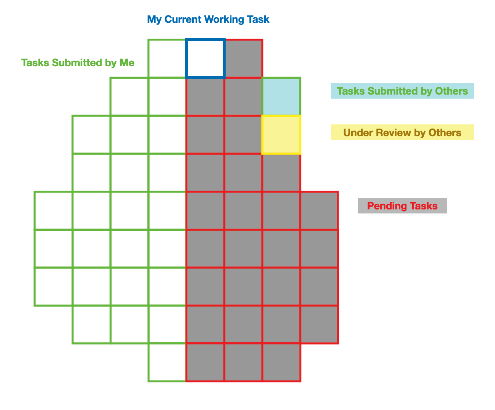
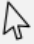
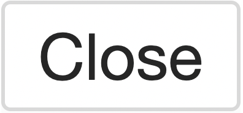

The QC tab contains a collection of tools to support the quality control (QC) process of one or more vector layers. Delivered vector results will be set up automatically as QC review project under QC tab. Users with permission can participate the QC review projects simultaneously to examine the vector results.
QC project admin can follow the steps below to manage participants in the QC review projects:
Project Admin will be able to manage the access of Members who may participate in the project by clicking on the button located in the action column.
In the prompt Member management window, a list of available members in the organization that are available to participate in the QC review project will be displayed with their corresponding roles.
Project admin can add specific members to the project by clicking on the checkbox then click on update button.
Users can open the QC Project with the button under the Action column of the QC project list. Once a project is opened, they will see the project interface with a Layers Panel on the left, a Map Viewer on the right, and a Toolbar with a set of tools at the top.
The Layers Panel on the left displays a list of layers that are part of the project and allows users to toggle their visibility in the Map Viewer. This consists of the following layers:

Example of all types of layers in QC tools Layers Panel
Comment Layer : A layer showing the comments made on the current task.
Working Task Layer : A layer representing the working area of the current task.
 Task Layer : The task assignment grid.
 Pending :
Tasks that have NOT been acquired by any users yet.
These tasks will be displayed with opacity indicating that no modification is allowed until the task is acquired by a user.
 Under Review by Others :
Tasks that have been acquired but not yet submitted by other users.
These tasks will be displayed with opacity indicating that no modification is allowed by the current user.
 Submitted by Me :
Tasks that have been reviewed and submitted by the current user.
Comments made in these tasks can be changed by the current user or project admin while the QC Project is active.
These tasks can be acquired and changed by the current user or any checker. (status will be updated to Under Review by Others)
 Submitted by Commenter :
Tasks that have been reviewed and submitted by a commenter.
Comments made in these tasks can be changed by the commenter who submitted this task or project admin while the QC Project is active.
These tasks can be acquired and changed by the current user or any checker. (status will be updated to Under Review by Others)
 Submitted by Checker :
Tasks that have been reviewed and submitted by a checker.
These tasks can be acquired and changed by a checker. (status will be updated to Under Review by Others)
These tasks can be changed and acquired by the current user or any checker. (status will be updated to Under Review by Others)
Target Vector Layers : The vector layers to be reviewed.
Underlying Raster Layers : The raster layers to review against.

Example of Task Layer and Current Working Task Layer
4.3.1.1. Disable the Identify Feature Tool on Layers
For each vector layer in the layer panel, there should be a icon displayed before the layer name by default. This is used to control whether the attribute values of a vector layer will be displayed when using the identify feature tool.
means the attribute values are currently visible while using the identify feature tool
means the attribute values are currently NOT visible while using the identify feature tool
Clicking on the icon allows users to switch between the above two settings.
Users can click on a vector/raster layer or a group of layers to focus on a single layer/group, or hold alt and click to focus on multiple layers/groups. All the layers in focus should be highlighted in blue and can be toggled on/off with the shortcut r.
The QC tool map viewer has following tools:
Scale bar: represents the relationship between distance on a map and in the real world
Units of Measurement: allows a user to switch between the imperial (U.S.) and metric (international) system
Ratio Scale: displays the ratio between one unit on the map and one unit in the real world; can be manually updated by the user (input the target ratio and hit enter)
The Map Viewer provides a visualization of all features in the selected layers and the underlying imagery. Users can examine individual features in the map by checking its geometry and attribute values.
The Toolbar contains a collection of tools that allows users to visualize the map features, pinpoint the exact locations where they would like to comment on, and create and edit their text comments.
To acquire a task, click on the button and the next task in the queue will be loaded to the Map Viewer.
Users can also actively select a task to work on. To do so, hold the Shift key on your keyboard and click on a task in the Map Viewer. The selected task will be assigned to you if you have access to it and it is still available.
When a Member of the project has reviewed the entire task area and provided all necessary comments, the task is then ready to be submitted to the processing system. To do so, click on the button and the comments on the current task will be synchronized to the Comment Layer of the project and will disappear from the Map Viewer once the upload is completed.
Tip
The shortcut of submitting the current task is Shift + a.
For information on additional shortcuts, please refer to Shortcut Tooltips .
With this function, the system will auto-assign tasks to current users based on the order in the queue. To activate this feature, select the tool from the Toolbar. Clicking on the button again disables the tool, so tasks will need to be manually acquired.
It is possible for users to return a pending task back to the task queue after acquiring it. All changes in the task will be discarded and the task will become available to other Members of the project once returned. However, users are not allowed to return a Commenter Submitted State Task since all the changes will be discarded. To return a task, click on the button and confirm to discard all changes.
Users can manually refresh the project using the button. Once clicked, updates in the project will be fetched and applied. For instance, the Comment List will be updated to include new comments made by other users, and the status of each task will be updated as well.
Tip
Members can use this tool to update to the most recent project comment option settings whenever the project admin makes any updates.
When the tool is selected, the following tools will appear at the top-right corner, and the comments stored in the Comment Layer can be viewed and edited with these tools.
Note
Reviewers can only create comments within the Working Task Layer, but they can make modifications in their previously submitted tasks.
Warning
Comment text may not be empty within the QC Tools Application.
Select Tool 
Select an existing comment geometry to bring up a comment editing box which will have different features based on which user created the comment:
For a comment created by the current user, an editing box will appear with the following features that allows the user to:
Use the button to delete the comment.
Click on the input box to activate a dropdown that allows a quick selection of some commonly used comments (options can be managed using the Comment Options tool).
Use the input box to edit the comment text.
Use the button to confirm changes.
Use the  button to discard any changes.
For a feature created by other users, a read-only text box will appear with the comment attribute value.
Users also have direct access to a Google Map Tiles layer which can be used as a reference. The Google Map Tiles layer is overlaid over the Raster layer that was used to produce the target vector layer. Click on the Google Map Tiles layer to toggle it on or off in the Map Viewer.
The Comment Options tool allows users to manage and modify a set of commonly used comment text, ie. comment options, which can be selected from a dropdown menu upon comment creation to save time.
Comment Options are the options that appear in the dropdown menu when clicking the comment box in the Review Comment Dialog.
They are created under each Comment Type so different options will become available under the input box depending on which comment type has been selected.
Comment Type
Comment Type is a categorization of the comment provided. It must be one of the types defined by the Organizer and selected by a project admin of the project.
Similar to shared Comment Options, Comment Types are created and managed by Organizer only at the organization-level and selected by a project admin at the project-level.
Note
If you do not need a classification of comments (ie. Comment Type), the a Default Comment Type that is set up by default can be selected for all comments and all Comment Options can be created under the Default Comment Type .
All the comment options available under the account will be displayed in a table under the Comment Option Settings tool. Each comment option table in the setting dialogue has the following components:
Whether or not to include this Comment Type or Comment Option in the current project.
Comment Type
A predefined categorization of comments.
Comment Option
A text comment that can be selected in a dropdown to be stored in the comment attribute.
Comment Option - Type
One of “Private” or “Shared”. The “Shared” type can only be created by the Organizer, which will then be made available in the Comment Option Settings Dialogue for all Members.
Action - Comment Type
Edit (Organizer only) : Edit an existing comment type.
Delete (Organizer only) : Remove an existing comment type.
Add (private options only for Member accounts) : Add a new comment option.
Action - Comment Option
Edit (private options only for Member accounts) : Edit an existing comment option.
Delete (private options only for Member accounts) : Remove an existing comment option.
All private comment options listed under Comment Options are created and saved at the account level and can be used for all projects.
Note
Users will need to manually select the options to be included in their comment dropdown for each project.
Shared Comment Options (Created by Organizer Only)
The Organizer can manage a shared set of predefined comments for all Member accounts to standardize the comment inputs. The shared comment options will be visible to all Members in their comment option settings dialogue and can be used similar to a private comment option.
Shared Comment Options can only be created using the Organizer account. However, a project admin can make a selection using existing shared comment options and apply their selection of the shared comment options to all reviewers of the project.
There is an additional setting for a project admin to control whether reviewers can create comments with customized input text that are outside of the selected set of comment options.
When this feature is turned on:
Reviewers of the project can input any comment text as they wish.
Reviewers can use private comment options in the project.
In order to quickly locate the comment type users intend to use from the dropdown list, users can re-arrange the order of the comment type by clicking Sort Selected Options on the bottom-left corner of Comment Option Settings window.
Users can drag and drop the comment types into to the rank they desired. Click Confirm once it is done.
Once the new order is set, the comment types will follow the new order when users try to create a new comment.
The Comment List panel will display a list of the existing comments in the project. Clicking on a comment from the list will pan to the location of the comment geometry, and bring up a comment editing box.
For comments created in the current project, the Admin can edit all comments in the comment list, whereas reviewers can only edit their own comments.
All users can edit comments imported from comment files.
Search by Username
search comments within current QC project by entering the username of the comment owner.
Search by User Email
This feature is designed to search for comments made by a certain user, given that individuals may have the same username.
Search by Comment # id
Each QC project’s comments, including imported comments, are identified by a time-ordered number identifier. Users can search specific comment using this parameter.
Users can also switch to different comment lists that come from different reference layer in the comment list window. In the first dropdown, users can switch to the reference layer they would like to examine and the list will switch to that particular layer’s.
This function in the tool bar is the same as update QC review status function in the project list. project admin can jump out of the current review session and change the project status accordingly.
The Project Reviewing Role of the current user will be displayed in the Toolbar, indicating whether the current user has Commenter or Checker capabilities.
A QC Project can be in one of the following states:
prepare_data (not manually set): The QC Project is being set up and the necessary project layers are being generated.
pending At this stage, the project is created but is not open to users to review yet.
active : The QC Project is up and open, so users can start reviewing and providing comments.
active (all tasks submitted) : The QC Project is up and open, and all tasks have been submitted, to signal to the Organizer that this project can be updated to the complete status.
stopped : The owner of the project has paused receiving comments, so no member will be allowed to create or modify any comments.
completed: The QC Project has been completed and indicated that no more comments need to be provided. Completed projects will be archived under Project History.
Once the project is set to completed , a prompt window will appear to collect general feedback for this particular QC project.
By clicking OK, the current QC project is considered as completed and finished. The comment file will be shared with production team at Ecopia automatically through the QC review system. Production team will reivew the received comments and provide adjustment accordingly.
The Project History is an archive of completed QC Projects, that allows a QC Review Admin to re-examine the comments made in the project, reopen or permanently delete a QC Project that they created.
QC review admin can also search the completed QC projects by using its ID or project name.


4.3.3.13. Comment List
The Comment List panel will display a list of the existing comments in the project. Clicking on a comment from the list will pan to the location of the comment geometry, and bring up a comment editing box.
The Comment Editing Accessibility Table
Note
For comments created in the current project, the Admin can edit all comments in the comment list, whereas reviewers can only edit their own comments. All users can edit comments imported from comment files.
The Comment List Panel
The Comment List Panel with an editable comment selected.
Component
Description
Comment #
A time-ordered numeric identifier for searching and referencing comments.
Comment Content
The text content of this comment.
Comment Type
The Comment Type of this comment.
Username
The username of the comment owner
Comment Detail Info Button
Display when clicking on the item, clicking this button will display the comment’s details.
Comment Detail Info Box Sample
Search Comment